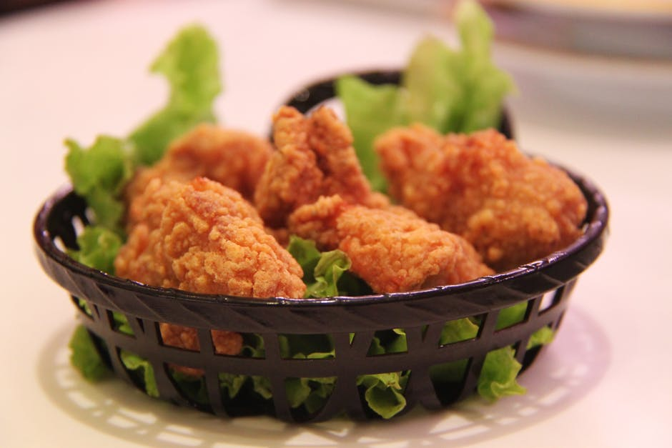
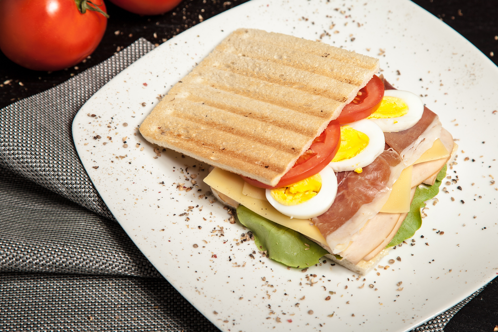
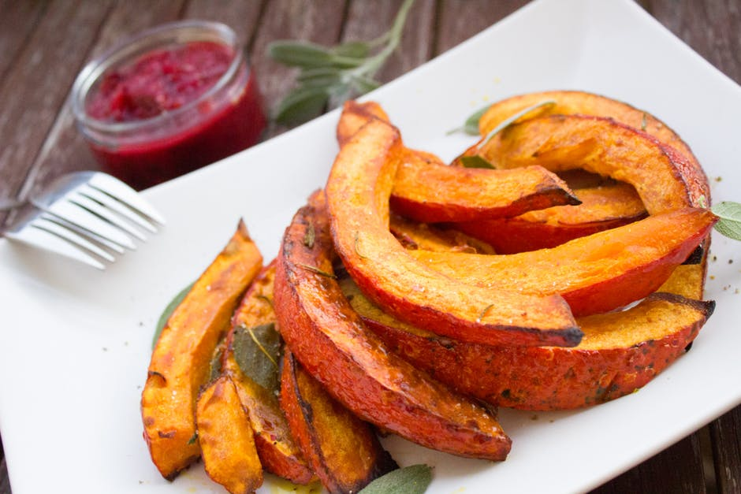
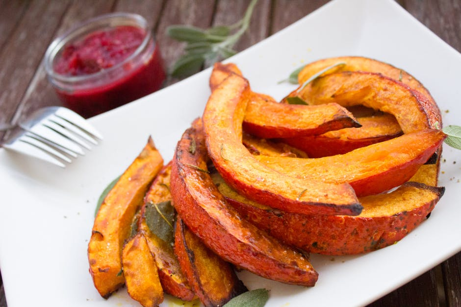
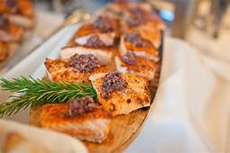
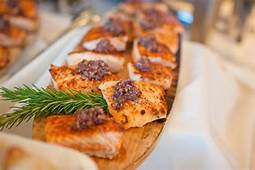
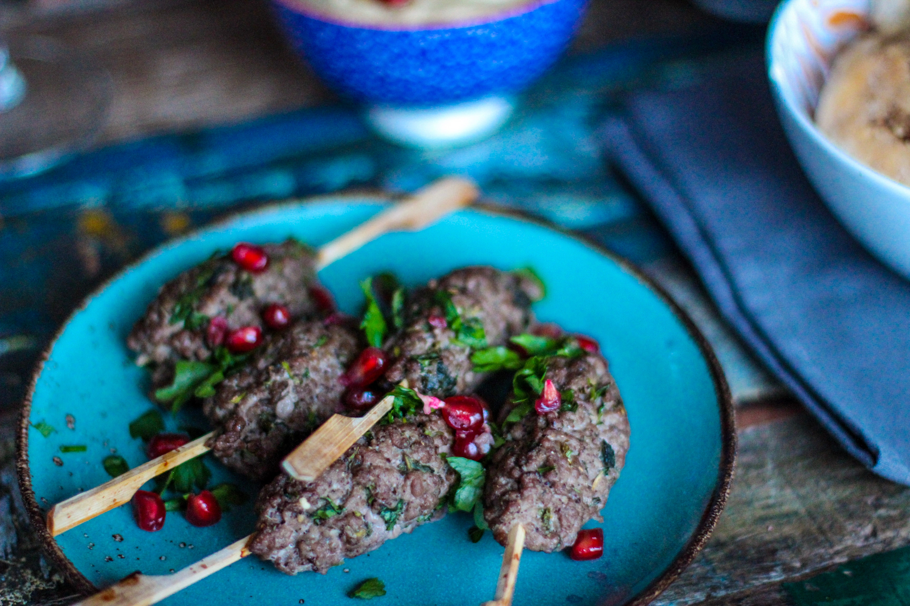
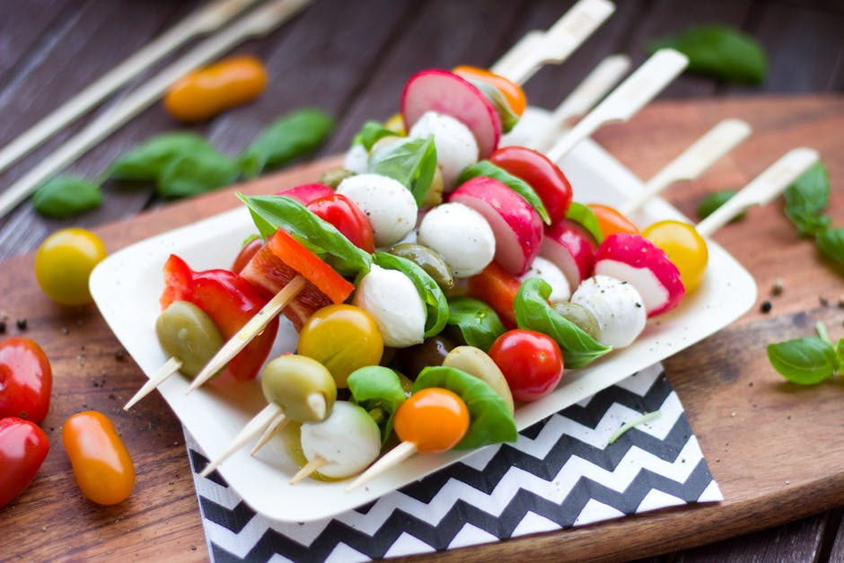
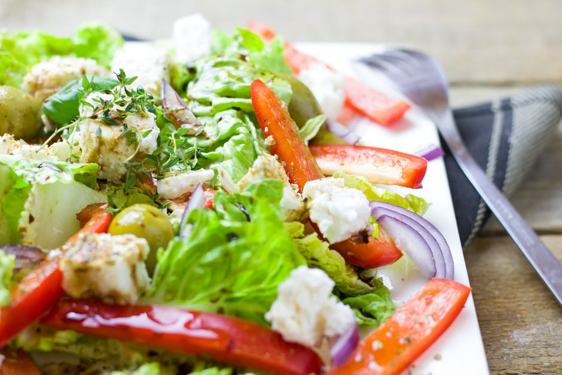
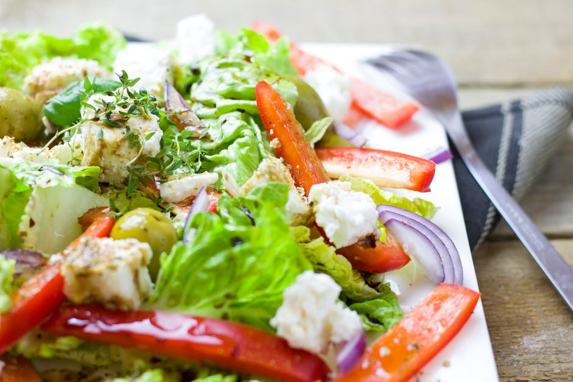

Everything in our list city is worth waiting in line for.
Everyone loves Famous Musa's Catering! Treat your guests to authentic, pit-smoked BBQ and made-from-scratch sides and desserts. Perfect for business events, graduations, meetings, weddings, parties, and neighborhood get-togethers. Our mission is to create awesome rotisserie meals. We started our restaurant revolution with just three ingredients: fire, a spit, and chicken. No one does chicken like we do. But chicken isn’t the only thing that hits our rotisserie oven. We like to get creative. Try our rotisserie turkey, potatoes, and new prime rib!. Swing by for a complete Family Meal or a little extra something to complete your family’s meal. Because at Musa catering , your order is always ready.
Are you a person with the test for life?,well if you are,You should try the list of our International Cuisine because we serve the best food in the planet nobody has ever imagened.We serve every meal from tradional healthy and tasty meals upto morden and latest dishes to us catering is our motive to success and we are Celebrated in gracious settings among family and friends.Catering your special event is a privilege.We look foward in doing business with you.
 
 


 

Life should be delicious! Sandwiches made to order with our signature flatbread paired with fresh ingredients and our own,distinctive sauces and spreads. Salads, soups, bagels, our unique flatbread pizza, gourmet beverages and desserts t.
Below are few pictures of most splendid exepriences we had around the world in consideration to our services at family lunch in Karoi and other places around the globe.We simply make your holidays memorable,enjoyable and lovable,Because we are simply the best. Check out the photos below so that you may take a glimpse of our splendid art .We also cater for big events such as weddings,Inhouse and outdoor parties.Now check out pictures exhibiting some of the best experiances we had with our customers last season.
 
 



Musa family Catering tailors each event to the specific needs and desires of each client. We will do our best to help make your event amazingly unforgettable. Sample menus are provided on our site, but we encourage our clients to think of them as a starting point to build the perfect culinary masterpiece. Vegan, Kosher, and Gluten Free menus are also available upon request. We also serve businesses, schools, and non-profit organizations. If you have a conference,training event, or gathering that’s going to last several hours; we can cater breakfast, lunch, or dinner.We enjoy providing great food for any event! As one of Atlanta’s Best Wedding Caterers, we have provided exceptional service for all events from elaborate to intimate and everything in between.